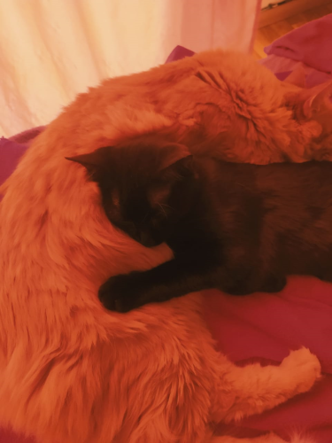
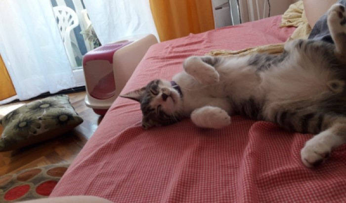

¿Cómo funciona? Coordinamos una reunión con vos y tu/s michi/s. Repasamos juntos sus cuidados y rutinas. También hablamos sobre su alimentación, hidratación e higiene, así como instrucciones del veterinario y cualquier medicamento. Además, te pedimos un contacto de emergencia que tenga llave, y los datos de tu veterinaria de confianza. Toda esta información estará en un formulario, el cual podremos chequear en cada visita, ¡para que no se escape ningún detalle! A menos que algo significativo cambie (como un nuevo integrante gatuno en la familia, o una afección de salud), no se requieren más evaluaciones para cuidados posteriores. En caso de que viajes seguido y necesites una asistencia mas dinamica/proactiva siempre se puede acordar.
Hacemos visitas diarias de diferente duración en la modalidad de una o dos horas. En cachorros y gerontes, sugerimos que la visita sea de dos horas o más.
brindamos a ustedes, sus familias humanas, un reporte completo a modo de resumen de su actividad. Acompañamos estos contenidos con fotos, videos o videollamadas para que se sientan lo más cercanos posibles.
